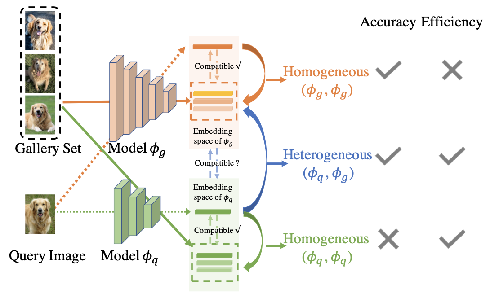

|
I am a senior software enginner at Google Research where I work on computer vision and machine learning. Bio: I obtrained my PhD at Department of Computer Science, University of Maryland, College Park supervied by Prof. David W. Jacobs in 2019. Before that, I received an M.Phil. from the University of Hong Kong under supervision of Dr. Kenneth K.Y. Wong in 2012, and a B.Eng in the University of Science and Technology of China in 2010. During my PhD studies, I was lucky to join Adobe Research, NEC Labs America and National ICT (NICTA) Australia as a research intern. Before joining Google Research, I worked as an applied scientist in AWS Rekognition. Email / CV / Google Scholar / Github |
{kind=link}
ResearchMuch of my current work is about image/video understanding. During my PhD stuides, my research is mainly about understanding lighting from images. Some selected papers are listed below. For a full list of papers, refer to my Google Scholar. |
|
Liangzhe Yuan, Nitesh Bharadwaj Gundavarapu, Long Zhao, Hao Zhou, Yin Cui, Lu Jiang, Xuan Yang, Menglin Jia, Tobias Weyand, Luke Friedman, Mikhail Sirotenko, Huisheng Wang, Florian Schroff, Hartwig Adam, Ming-Hsuan Yang, Ting Liu and Boqing Gong. Arxiv, 2023. Paper |
|
|
Rahul Duggal, Hao Zhou, Shuo Yang, Jun Fang, Yuanjun Xiong and Wei Xia. ECCV, 2022. Paper |
|
|
Tianyue Cao, Yongxin Wang, Yifan Xing, Tianjun Xiao, Tong He, Zheng Zhang, Hao Zhou, and Joseph Tighe. ECCV, 2022. Paper / Code |
|  |
Rahul Duggal, Hao Zhou, Shuo Yang, Yuanjun Xiong, Wei Xia, Zhuowen Tu, Stefano Soatto. CVPR, 2021. Paper Mentioned by the VP of AWS AI in Graceful AI |

|
Koutilya PNVR, Hao Zhou, David Jacobs. CVPR, 2020. Paper / Code |

|
Hao Zhou, Sunil Hadap, Kalyan Sunkavalli and David W. Jacobs ICCV, 2019. Paper / Code / Project Covered by Two Minutes Paper |
|
Hao Zhou, Xiang Yu and David W. Jacobs ICCV, 2019. (Oral Presentation) Paper |
|
Hao Zhou, Jin Sun, Yaser Yacoob and David W. Jacobs CVPR, 2018. (Spotlight) Paper |
|
Soumyadip Sengupta, Hao Zhou, Walter Forkel, Ronen Basri, Tom Goldstein, David W Jacobs. JMIV, 2017. Paper |
|
Hao Zhou, Jose M. Alvarez and Fatih Porikli. ECCV, 2016. (Spotlight) Paper |
|
Hao Zhou, Torsten Sattler and Fatih Porikli. ECCV Workshop on Local Features: State of the Art, Open Problems and Performance Analysis, 2016. Paper |
|
Hao Zhou, Zhanghui Kuang and Kwan-Yee K. Wong. CVPR, 2012. Paper |
|
The portrait is drawn by Daichi Ito when I interned in Adobe. This website is designed according to the website of Jon Barron. |